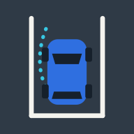

Drive PracticePrivacy Policy
Last updated 29 October 2026
Drive Practice is a driving practice game. It does not collect, store or share any personal data.
What stays on your device
The game saves your level progress, stars, best times, chosen language and steering wheel side. This is kept only on your device, in the app's local storage. It is never sent anywhere. Deleting the app (or clearing website data in your browser) removes it.
What we do not do
- No accounts or sign-in.
- No analytics, tracking or advertising.
- No third-party services or SDKs that collect data.
- The app makes no network requests while you play and works offline.
Children
The game collects no data from anyone, including children.
Changes
If this policy ever changes, the new version will be posted on this page with a new date.
Contact
Questions about privacy? Open an issue on GitHub.